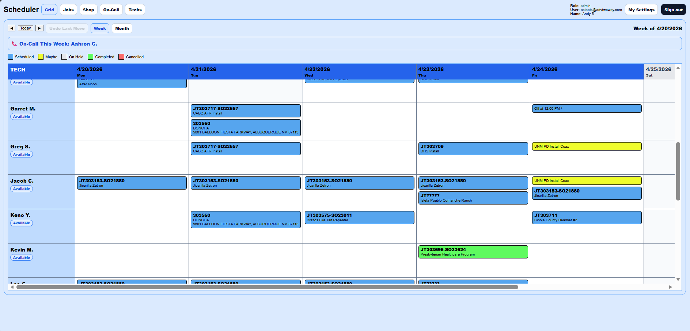
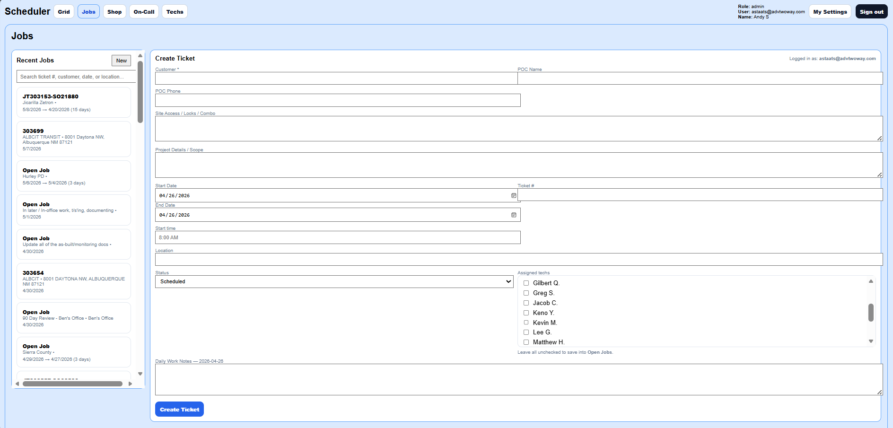
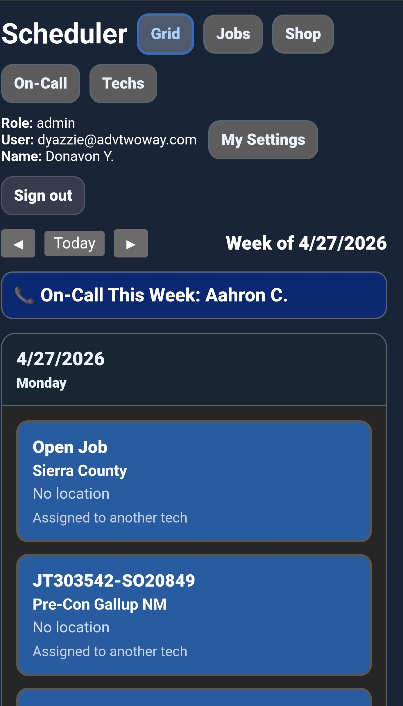

A technician scheduling and job tracking platform built for field service teams that need better visibility, accurate time tracking, and reliable offline support.
Built for real-world field operations, remote job sites, and technician-based companies.
ArmorSec Field Scheduler helps companies schedule technicians, manage job tickets, track travel and labor time, handle on-call rotations, and keep field teams connected even when signal is limited.
Assign work using a clean scheduling grid with weekly and monthly views.
Manage job details, technicians, notes, history, and job updates from one place.
Track travel time, labor time, crew totals, and job time for better reporting.
A clean, real-time view of scheduling, job tracking, and field operations.

Visual drag-and-drop scheduling with full visibility of technicians and jobs.

Track notes, time, and updates directly from the job ticket.

Technicians can view jobs and update progress directly from the field.
Screenshots can be updated as the scheduler continues through beta testing.
Move jobs between technicians and dates quickly without rebuilding the schedule.
Keep unassigned jobs visible until they are ready to be scheduled.
Track PTO, sick time, training, off days, and scheduling conflicts.
Technicians can continue working in low-signal areas and sync updates when service returns.
Manage weekly on-call schedules, overrides, and holiday coverage.
Export time sheets, print job summaries, and review total crew time.
See who is assigned, where they are going, and what jobs are active.
Reduce manual time sheet errors with built-in travel and labor tracking.
Built for technicians working in remote areas with unreliable signal.
Designed to grow into customer management, equipment tracking, billing, and payroll reporting.
In addition to software solutions, ArmorSec also supports businesses with cybersecurity planning, risk reduction, and practical security guidance.
Identify vulnerabilities before attackers do.
Support for ATF, PCI-DSS, and industry security requirements.
Improve perimeter security and reduce unauthorized access.
Help teams recognize phishing, scams, and common cyber threats.
ArmorSec Field Scheduler is currently in beta testing and being refined for real-world technician operations.
Request a Demo